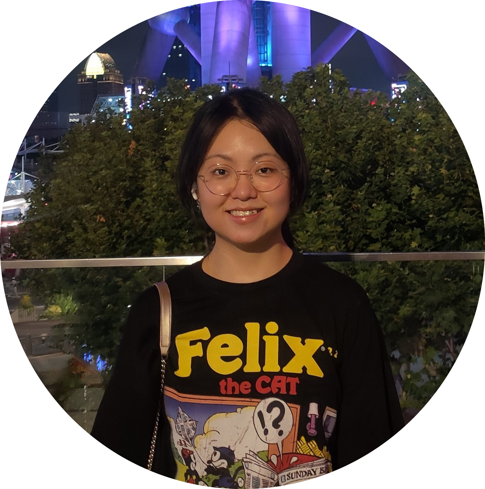

|
Yanling Hua (化彦伶)
I am currently a computer vision engineer in nullmax. Previously, I also worked in OPPO for one year.
Github /
Researchgate /
LinkedIn
Blogs /
Please feel free to contact me by email: yanlinghuaylh@gmail.com shen.sang[at]bytedance[dot]com
|

|
|
News
[2022.08] One paper is accepted to SIGGRAPH Asia 2022.
|
|
Research and Publication
My current interests and works mainly focus on 3D vision and graphics, including photorealistic and stylized avatar creation, neural rendering, face manipulation, stylization, etc. I worked on 3D reconstruction and neural relighting before.
Machine learning and computer vision Novel view sythesis using Nerf Image translation and editing using GAN image segmentation
|
AgileAvatar: Stylized 3D Avatar Creation via Cascaded Domain Bridging
Shen Sang,
Tiancheng Zhi,
Guoxian Song,
Minghao Liu,
Chunpong Lai,
Xiang Wen,
James Davis,
Linjie Luo
SIGGRAPH Asia, 2022
arXiv /
paper /
bibtex
|
OpenRooms: An End-to-End Open Framework for Photorealistic Indoor Scene Datasets
Zhengqin Li,
Ting-Wei Yu,
Shen Sang,
Sarah Wang,
Meng Song,
Yuhan Liu,
Yu-Ying Yeh,
Rui Zhu,
Nitesh Gundavarapu,
Jia Shi,
Sai Bi,
Zexiang Xu,
Hong-Xing Yu,
Ravi Ramamoorthi,
Manmohan Chandraker
CVPR, 2021 (Oral Presentation)
paper
|
Single-Shot Neural Relighting and SVBRDF Estimation
Shen Sang,
Manmohan Chandraker
ECCV, 2020
paper /
bibtex
|
|